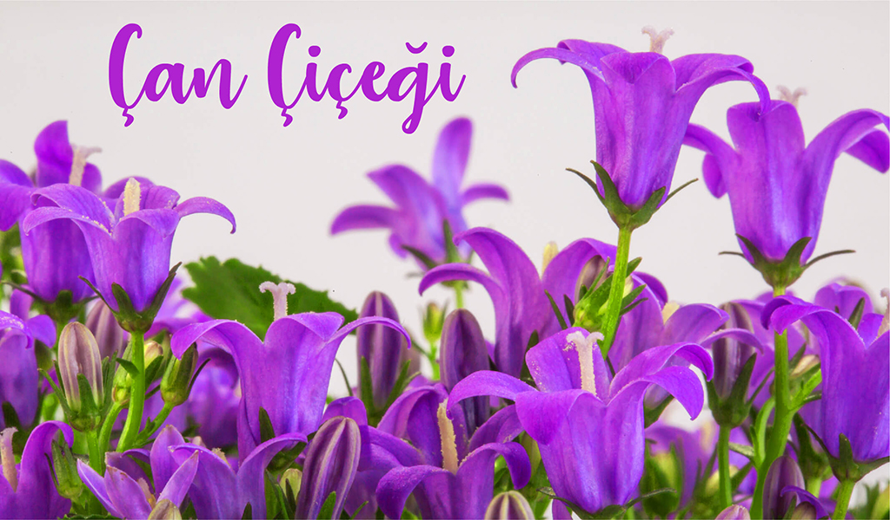

Çan çiçeği (Campanula), çan çiçeğigiller (Campanulaceae) familyasından bir, iki ya da çok yıllık bitkilerin ortak adı. Adlarını çiçeklerinin çan şeklinde olmasından alır. Latince'de Campanula küçük çan anlamına gelir. Çiçekleri için bahçelerde ve saksılarda süs bitkisi olarak yetiştirilir. Cinsin dünya üzerinde 300 kadar tür ve çok sayıda alt türü bulunur. Yayılışı kuzey yarım kürenin ılıman bölgeleri ile en yüksek çeşitliliği olan Akdeniz ve Kafkasya'dır. Yüksek dağlık bölgelerdeki arktik ve alpin türler bodur formda 5 cm den küçükken, ılıman rejyonlarda ormanlık ve çayırlık alanlarda yetişen türler 2 m boya ulaşabilir. Çan çiçeği türleri bazı Lepidoptera üyeleri larvalarının besin kaynağını oluşturur.
